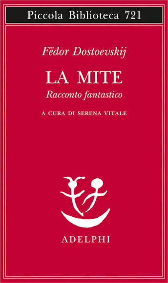

Davanti al corpo della giovane moglie appena tolta la vita, un uomo — un usuraio orgoglioso e chiuso — ripercorre mentalmente l'intera storia del loro matrimonio, cercando di capire dove tutto sia andato storto. Il racconto si muove tra il presente straziante e il passato, in un crescendo di autoanalisi che mette a nudo l'incapacità di comunicare tra due persone che, a modo loro, si amavano davvero.
Il libro è diviso in due capitoli, a loro volta suddivisi in sottocapitoli. Il primo mi ha coinvolta abbastanza fin da subito; il secondo, invece, mi è sembrato un po' più piatto — salvo poi risollevarsi negli ultimi due sottocapitoli, che mi hanno fatto ritrovare tutto il piacere e l'interesse iniziali.
C'è stato un primo momento di shock quando ho scoperto la differenza d'età tra i due protagonisti. Ho iniziato a sottolineare alcune frasi, ma in certe pagine mi sono resa conto che avrei dovuto sottolineare tutto dall'inizio alla fine — assurdo quanto fosse denso di passaggi significativi. Oltre a sottolineare, questa volta ho anche preso appunti, per ricordarmi meglio i passaggi più importanti della storia.
A un certo punto ho capito che la vera parola chiave del romanzo fosse "silenzio", e quanto fosse importante rispettarlo. Quando lei inizialmente non voleva dormire con lui nello stesso letto, mi sono ritrovata a ridere — ma l'episodio successivo mi ha lasciata basita e scioccata. Nel capitolo sei, invece, ho trovato un livello di overthinking del protagonista davvero assurdo.
Successivamente, un episodio della storia mi ha lasciata con un "ma che bisogno c'era" spontaneo — senza dire di più, per non rovinare la sorpresa a chi non ha ancora letto il libro, ma è stato un altro dei momenti che più mi ha lasciata a bocca aperta. L'ho letto in quattro giorni, non perché fosse impegnativo, ma perché ho voluto prendermela con calma senza esaurirlo subito.
Nonostante mi sia piaciuto, essendo così breve non ho fatto in tempo ad affezionarmi davvero ai personaggi e alle vicende. Ciò che però mi porto a casa è un grande insegnamento: a volte basta semplicemente essere in tempo, perché anche cinque minuti possono cambiare completamente le carte in tavola.
"No, ascoltate, se si deve giudicare un uomo, lo si deve fare con la conoscenza di tutte le circostanze..."
"Vedete: la gioventù, cioè la buona gioventù, è generosa e irruente, ma poco tollerante, e appena qualcosa non corrisponde al suo ideale, lo disprezza subito."
"E all'improvviso questa ragazza giovane di soli sedici anni aveva raccolto certi pettegolezzi sulla mia vita precedente, da uomini volgari, e pensava di conoscere tutto di me, mentre la cosa essenziale restava rinchiusa nel mio petto!"
"Ma la donna che ama, adora perfino i vizi, perfino i delitti dell'essere amato. Egli stesso non troverà ai propri delitti quelle giustificazioni che escogiterà per lui la donna. Si tratta di generosità, ma non di originalità."
"Si afferma che chi sta su una cima si sente involontariamente attratto dall'abisso."
"E se ti fossi innamorata di un altro, che importa, che importa! Tu saresti andata con lui e avresti riso e io ti avrei guardata dall'altra parte della strada..."
"Perchè dite che io guardavo senza vedere?"
"Finchè lei giace qui- va tutto ancora bene: [...] ma domani la porteranno via, come farò io a rimanere solo?"